编者按
本页为作者中文原文的全文逐字镜像（原文即中文，未改写）；配图为原文配图（转为 webp），代码块按原文内容还原到对应位置，原文中的「引用」角标统一收在文末链接列表。原帖发布于 2026-08-06（新加坡时间 14:28），截至收录时约 57 万次浏览、2,600+ 收藏。文中所有耗时、显存数据均为作者在 RTX 4090 48GB（魔改）上的实测，本站未复现。
要点速览：① 官方只开源了 33B 的 H3-Base（768p 级音视频），Context-IR 提示词改写与 2K 重生成仍是闭源 API；② ComfyUI ≥ 0.30.0 才有原生节点，T2V/I2V 只需 4 个文件约 39.6 GB，地板配置 3060 12GB + 32GB 内存；③ 帧数会静默吸附到 17k+5 网格（单次上限 362 帧 ≈ 15.08 秒），原生画布短边 768；④ 提示词用官方三字段（T2V）/六段式（R2V）结构化格式，对白放 <d> 标签；⑤ SageAttention 省约 24%，再叠 TeaCache 可再省 58%，但会改变成片、画面更“发呆”。
本站相关：MiniMax H3 Director 工作流 · MiniMax-H3 Prompt Rewriter · ComfyUI-H3-Motion-Context
原文全文
这篇教程的目标：一台只装了系统和显卡驱动的电脑，跟着做完，能跑出带立体声的 AI 视频，并且学会官方提示词语法——H3 出片好坏，大半在这上面。每一步都写清“做什么、怎么做、做完应该看到什么”，不需要任何代码基础。
开始前必须知道的一件事：本地模型的原生画布是 768p 级。 模型只在短边 768 的画布上训练过，官方的 2K 出片属于另一个闭源模块。但 768p 不是本地的天花板：分辨率可以硬开更大（有人在 5090 上原生跑 1920×1088，画质确实更好，代价是 10 秒片等了 58 分钟），社区也已经有现成的本地超分工作流把 768p 拉上 1080p——两条路的取舍文末细算。先把三个模块的分工搞清楚，官方只开源了中间那个：
- H3-Context-IR — 提示词理解与编排（把你的描述改写成模型爱吃的格式）。❌ 闭源，仅 API
- H3-Base — 33B 生成主体，输出 768p 级别音视频。✅ 开源，本教程主角
- H3-Regenerate-2K — 把 768p 重生成为 2K。❌ 闭源，仅 API
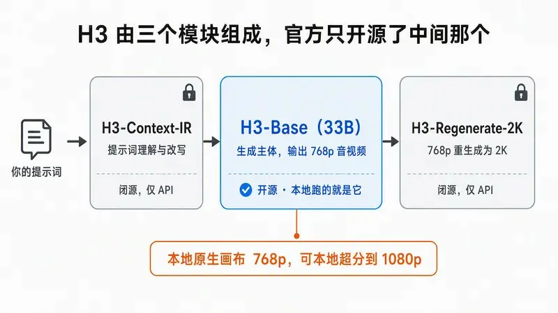
所以“本地跑 H3 完全不花钱”这句话基本成立：草稿、768p 成片免费，1080p 靠社区超分也能本地解决；只有“原汁原味的官方 2K”必须走 API。什么时候用哪边，文末有一笔算清楚的账。
本文实测数据来自一张 RTX 4090 48GB（魔改），但这不是门槛——ComfyUI 官方确认的地板是 3060 12GB + 32GB 内存。从 3060、5070 到 3090、5090，每档显卡怎么选量化、能跑多快，第 0 步有一张表。显存小只影响你能开多大规格、等多久，不影响“能不能跑”。
目录
- 看懂几个名词（30 秒）
- 第 0 步：网页版验货 + 硬件自查
- 第 1 步：安装 ComfyUI
- 第 2 步：下载模型文件
- 第 3 步：跑通第一条视频（T2V）
- 第 4 步：看懂参数——帧数和分辨率的硬规则
- 第 5 步：图生视频（I2V）
- 第 6 步：参考生视频（R2V）
- 第 7 步：提示词完整指南 ★ 全文最值钱的部分
- 第 8 步：加速——SageAttention 省 24%，叠 Cache 最多再省 58%
- 常见问题排查
- 声音效果，提前对齐预期
- 本地 vs API，一笔账
1. 看懂几个名词（30 秒）
- ComfyUI：跑 AI 生成模型的免费开源工作台。界面是“节点连线”式的，但你不需要自己连——官方模板都搭好了，你只改参数。
- 工作流（Workflow）：一张连好线的节点图，相当于“配方”。加载模板 = 打开现成配方。
- 权重 / 模型文件：模型本体，后缀 .safetensors 的大文件。H3 需要 4 个：DiT（画画的）、文本编码器（读懂提示词的）、视频 VAE 和音频 VAE（把内部数据翻译成像素和声波的）。
- 量化：把模型压小的技术。bf16 是全精度原版，int8、nvfp4 是压缩版，画质损失很小、显存需求大降。本地部署基本都用量化版。
- T2V / I2V / R2V：三种生成模式——纯文字生成、给图片让它动起来、给参考素材（图/视频/音频）锁定角色或风格。
2. 第 0 步：网页版验货 + 硬件自查
动手之前：先花 10 分钟在网页上验货
40 GB 的权重先放着。H3 在海螺 AI 网页版（国内 hailuoai.com，海外 hailuoai.video）就能直接试：登录 → 进视频生成 → 模型选 MiniMax H3 → 随便传一张图，写一句“让画面里的人物向镜头挥手，配上街道环境音”，生成。
看三样东西：主体稳不稳、镜头动得自然不自然、声音和画面对不对得上。这三样满意了，再往下走；不满意，这篇教程你也不用读了，省下半天时间。网页版的额度和 API 是两套账，网页额度用完不影响后面走 API。
硬件自查
- 显卡：最低 NVIDIA 12GB 显存，推荐 24GB+。怎么查：Windows 按 Ctrl+Shift+Esc → 性能 → GPU → “专用 GPU 内存”；或命令行输
nvidia-smi。 - 内存：最低 32GB，推荐 64GB。任务管理器 → 性能 → 内存。
- 磁盘空闲：最低 60 GB，推荐 150 GB+。权重约 40 GB，加上生成产物和 R2V 权重会继续涨。
- 系统：Windows 10/11 或 Linux.
- 网络：能访问 Hugging Face 或其镜像，见第 2 步镜像方案。
对号入座：你的显卡属于哪一档
ComfyUI 核心开发者官方确认的地板线：3060 12GB + 32GB 内存 + 一块不错的 NVMe 固态，就能跑 480p。12GB 有 12GB 的跑法，找到自己那一行：
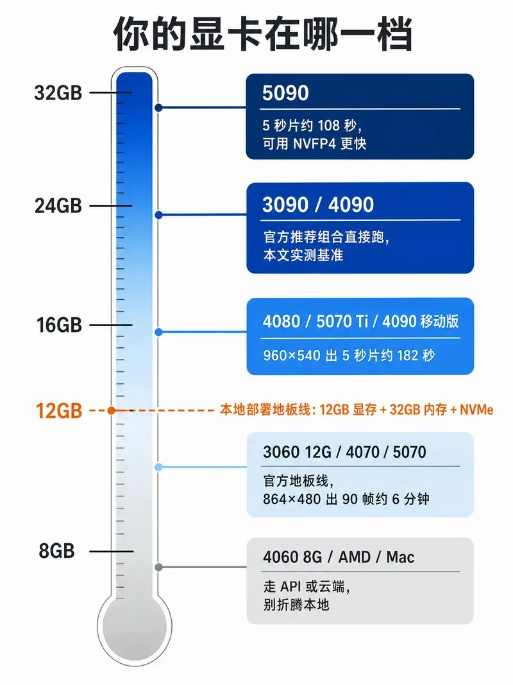
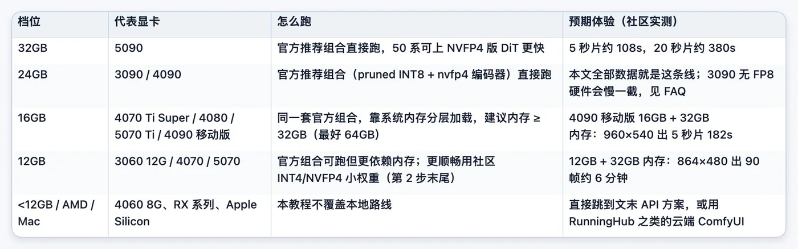
数据出处：5090 与 12GB 卡来自社区实测帖，4090 移动版来自开启 SageAttention 的 20 步实测
两条跨档位的通用提醒：
系统内存和固态跟显卡一样重要。 H3 靠“显存装不下就借内存”的分层加载才能在消费级卡上跑，32GB 内存是底线，64GB 才从容——16GB 内存 + 大显存反而跑不动。模型从磁盘进内存那一步，机械硬盘会让每次首跑多等几分钟，权重务必放 NVMe 上。
30/40 系和 50 系的一个隐藏差别：NVFP4 只有 50 系（Blackwell）有硬件原生支持。 在 3090/4090 上加载 nvfp4 权重时，ComfyUI 会走“模拟模式”——省磁盘和显存占用，但算之前要解压回高精度，不省时间。所以 50 系用户可以大胆选社区 NVFP4 版 DiT（更小更快），30/40 系用户选 INT8/FP8 系更划算。
3. 第 1 步：安装 ComfyUI
版本必须 ≥ 0.30.0，这是硬门槛：H3 的原生支持（4 个专用节点 + 官方模板）于 2026 年 8 月 3 日随 Comfy-Org/ComfyUI #15224 合并，旧版没有这些节点，任何工作流都跑不起来。
情况 A：全新安装（推荐小白）
- 打开 ComfyUI 官网，下载对应系统的桌面版安装包。
- 双击安装，一路默认。安装器会自动处理 Python、PyTorch、CUDA 依赖，这正是桌面版对新手友好的原因。
- 装完启动。第一次启动会做初始化，等它跑完。
情况 B：已有 ComfyUI
- 桌面版：菜单里检查更新到最新稳定版。
- 手动 git 部署：进入 ComfyUI 目录执行 git pull，再 pip install -r requirements.txt。
- 整合包（秋叶包等）：等整合包作者更新，或在启动器里更新内核。注意：桌面版和整合包跟随稳定版发布，个别 nightly 才有的功能可能晚几天到。
验证安装成功
启动后浏览器打开 http://127.0.0.1:8188（桌面版直接弹出窗口），看到节点画布。确认版本：设置（左下角齿轮）→ 关于，版本号 ≥ 0.30.0。低于就回去更新，别硬试——“缺少 MiniMaxH3ImageToVideo 节点”这个最高频报错，99% 是版本问题。
4. 第 2 步：下载模型文件
模型托管在 Hugging Face 的 Comfy-Org/MiniMax-H3 仓库。
警告：别 clone 整个仓库。 原始仓库全量约 318 GB，而你只需要 4 个文件。
国内下载提速
把任何 Hugging Face 链接里的 huggingface.co 换成 hf-mirror.com，就是国内镜像，速度差一个量级。20GB 的大文件建议用支持断点续传的下载工具（IDM、aria2、或浏览器自带恢复下载），断了不用重来。
会用命令行的，一条命令精确下四个文件（国内先执行 set HF_ENDPOINT=https://hf-mirror.com, Linux/macOS 用 export）：
pip install -U huggingface_hub
hf download Comfy-Org/MiniMax-H3 \
diffusion_models/minimax_h3_fl2va_pruned_int8_convrot.safetensors \
text_encoders/qwen3vl_32b_minimax_h3_nvfp4_awq.safetensors \
vae/minimax_h3_video_vae_fp16.safetensors \
vae/minimax_h3_audio_vae_fp32.safetensors \
--local-dir ComfyUI/models/T2V / I2V 必需的 4 个文件（约 39.6 GB）
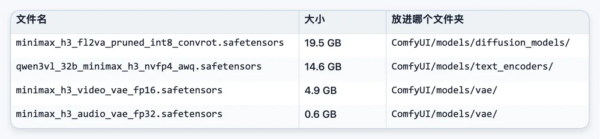
两个 VAE 都必须下——视频 VAE 出画面，音频 VAE 出声音，少了音频 VAE 你会得到一条无声视频。
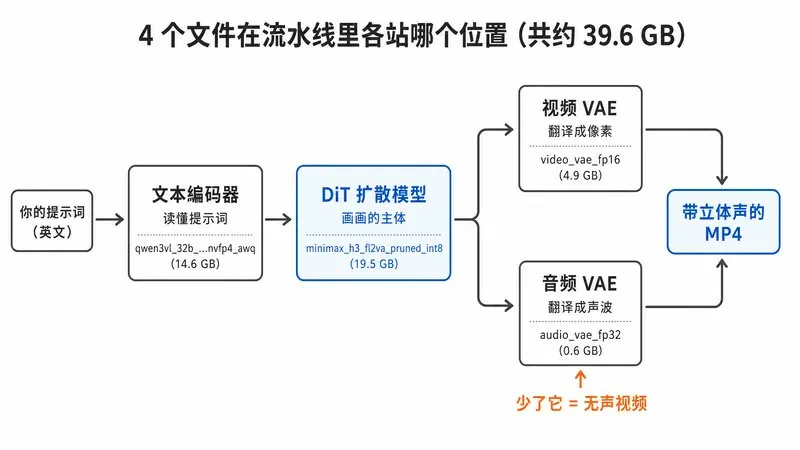
放完后目录应该长这样：
ComfyUI/
├── models/
│ ├── diffusion_models/
│ │ └── minimax_h3_fl2va_pruned_int8_convrot.safetensors
│ ├── text_encoders/
│ │ └── qwen3vl_32b_minimax_h3_nvfp4_awq.safetensors
│ └── vae/
│ ├── minimax_h3_video_vae_fp16.safetensors
│ └── minimax_h3_audio_vae_fp32.safetensors桌面版用户注意：模型目录可能在安装时自选的路径下，设置里搜 “model paths” 确认。
更懒的办法：跳过手动下载，直接做第 3 步——加载模板时 ComfyUI 会弹窗列出缺失模型并给下载按钮，点击自动下到正确位置。手动下载的价值在于能用镜像和断点续传，网络不稳的人建议手动。
官方全部变体一览（按需选择，多数人用不到）
Diffusion 模型（选一个；想玩 R2V 要多下 ref2va 那份）:
minimax_h3_fl2va_pruned_int8_convrot（19.5 GB） — ✅ 推荐，T2V/I2V 最佳平衡minimax_h3_fl2va_pruned_fp8_scaled（19.5 GB） — 备选量化格式minimax_h3_fl2va_int8_convrot（31.7 GB） — 标准 INT8（未剪枝）
minimax_h3_fl2va_bf16（61.7 GB） — 全精度，微调用minimax_h3_ref2va_pruned_int8_convrot（19.5 GB） — R2V 模式专用，第 6 步会用到minimax_h3_ref2va_bf16（61.7 GB） — R2V 全精度
文本编码器（选一个）:
qwen3vl_32b_minimax_h3_nvfp4_awq（14.6 GB） — ✅ 推荐，任何 GPU 可跑qwen3vl_32b_minimax_h3_int8_convrot（25.3 GB） — INT8 版qwen3vl_32b_minimax_h3_bf16（48.0 GB） — 全精度
为什么这么选，两个冷知识（跳过不影响操作）:
- H3 吃显存的大头是编码器，不是 33B 的 DiT。 编码器直接用了 Qwen3-VL-32B 的全量权重（bf16 下 62.13 GiB，比 61.73 GiB 的 DiT 还大），一个 32B 视觉语言模型在这里只是个“读题的”。所以编码器必须选狠量化的 nvfp4 版。网上流传“编码器 51.5GB”是错的，以官方仓库文件大小为准。
- pruned（剪枝）= 砍掉 13B 的 AdaLN 分支。 61.73 − 37.46 ≈ 24.3 GiB，正好是那 13B。官方确认这部分的调制输出可以预计算缓存，纯推理根本不用加载。结论：只做推理就用 pruned，要微调才需要完整权重。
按显卡档位选社区量化（可选加餐）
官方那套 pruned_int8 + nvfp4_awq 是通吃组合，任何档位都建议先用它跑通。跑通之后想更快、更省，再来这里按卡换餐。以下均为社区第三方转换（非官方发布，画质和许可自查各仓库 README），原生 ComfyUI 可直接加载：
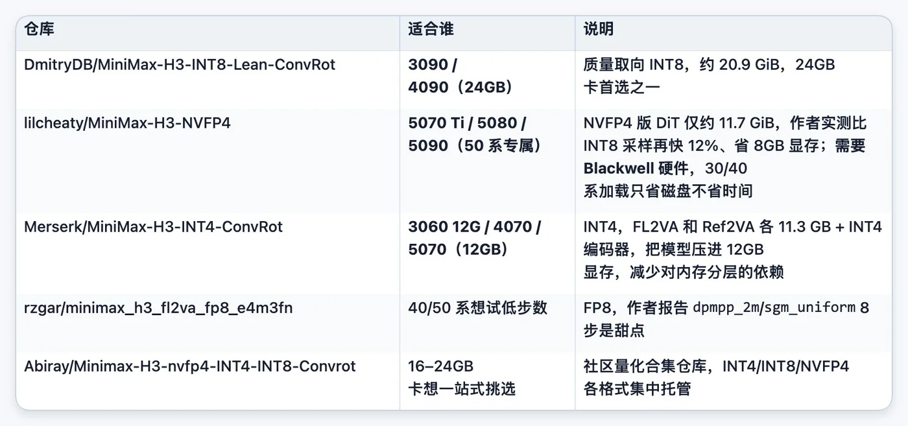
换社区权重时记住一条：DiT、编码器可以换，两个 VAE 永远用官方原版——它们本来就不大，量化它们只会伤画质和声音。
5. 第 3 步：跑通第一条视频（T2V）
加载官方模板
打开 ComfyUI → 顶部菜单工作流 → 浏览模板 → 视频分类，搜 “MiniMax H3”。
你会看到 6 个模板，认清楚，别点错：
- MiniMax H3 Text to Video — 本地，文生视频，从这个开始
- MiniMax H3 Image to Video — 本地，图生视频（首帧/尾帧）
- MiniMax H3 Reference to Video — 本地，参考生视频，需另下 ref2va 权重
- api_minimax_h3_t2v / r2v / flf2v — API 版，调 MiniMax 云端，要充值 API key，先无视
点开 Text to Video。如果弹窗提示缺模型，按提示下载；第 2 步已手动放好则直接就绪（没识别到就重启一次 ComfyUI——模型列表在启动时扫描）。
认识工作流里的关键节点
模板加载后画布上有一串节点，你只需要认识这几个：
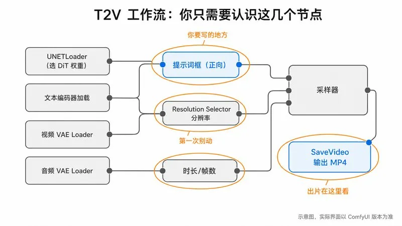
UNETLoader：选 DiT 权重，确认下拉框里是minimax_h3_fl2va_pruned_int8_convrot.safetensors。- 文本编码器加载节点：确认选中
qwen3vl_32b_minimax_h3_nvfp4_awq.safetensors。 - 两个 VAE Loader：分别选视频 VAE 和音频 VAE。
- Resolution Selector：控制输出分辨率（宽高比、Megapixels 两个参数算出宽高）。模板默认是快速预览规格，第一次先别动。
- 提示词框（正向）：写你要的内容。
- 时长/帧数输入：决定视频长度，规则见第 4 步。
SaveVideo：输出 MP4 的终点。
跑
提示词框里写一句英文场景（先不管语法，第 7 步才是正课）:
A cat walks along a rainy street at night, neon lights reflecting in puddles, soft rain sounds.点 Run（运行）。
你应该看到什么
进度条先卡在模型加载（约 34 GB 从磁盘进显存/内存），然后逐步采样。
第一次特别慢是正常的：4090 48G 实测首跑 644 秒（含加载），同规格热跑 425 秒；768×432 小规格热跑仅约 99 秒。其他档位对齐预期：5090 出 5 秒片约 108 秒；16GB 卡（如 4090 移动版）960×540 出 5 秒片约 182 秒；12GB 卡靠内存分层加载，864×480 出 90 帧约 6 分钟。首跑都要在这些数字上再加几分钟加载时间，泡杯茶等。
结束后 SaveVideo 节点出现视频预览：有画面、有声音。声音和画面是同一次前向传播里一起生成的，这是 H3 区别于“生成后配音”类模型的根本点。
控制台如果刷 Input tensors must be in dtype of torch.float16 or torch.bfloat16, using pytorch attention instead——这不是报错。官方文档确认这是部分层回退到标准 attention 的正常提示，生成不受影响。
跑通了，部署阶段结束。接下来是从“能跑”到“会用”。
6. 第 4 步：看懂参数——帧数和分辨率的硬规则
这两条规则直接读 ComfyUI 的 H3 节点源码坐实，不是经验玄学。
规则一：帧数必须落在 17k+5 网格，而且会静默吸附
源码逻辑就一行：
while n % 17 != 5:
n += 1你填的帧数如果不合法，会被向上吸附到最近的合法值，不报错、不提示。实测填 61 帧，拿到 73 帧。
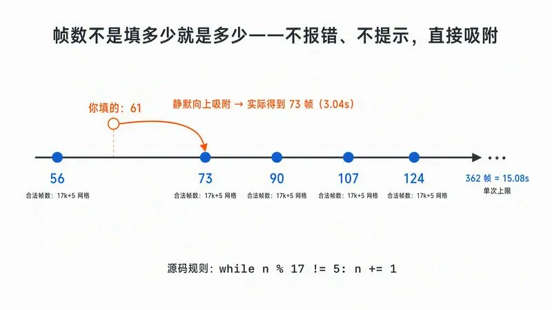
训练区间是 124–362 帧，24fps 下即 5.17 至 15.08 秒；这个区间内的全部合法档位：
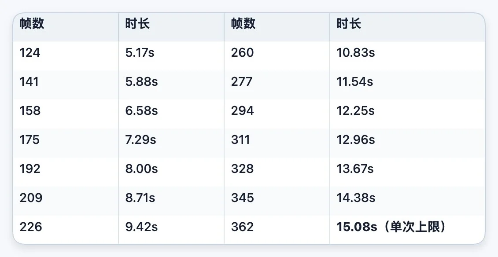
填 60 秒也只会得到 15.08 秒，更长的内容要分镜头生成再剪辑。节点 tooltip 原话是 “trained range is ~124-362, longer is untested”——少于 124 帧也能跑（网格从 5、22、39……就开始），但在训练分布外，质量不保证。日常直接从这张表里挑，别让它吸附——你以为的 6 秒和实际的 6.58 秒，在卡口型的场景里就是灾难。
规则二：分辨率的“原生画布”是短边 768
模型按「短边 768、面积上限 768×1344、每轴对齐 32 的倍数」训练。操作建议：
试提示词：模板默认的快速预览规格（如 768×432），约 99 秒/条，快速迭代。
出正片： Resolution Selector 的 Megapixels 拉到约 1.0,16:9 下得到约 1344×768——正好是原生画布，质量最好。
下限 384p:256p 及更低会完全失败，这是官方确认的，不是你的配置问题。
超原生画布不是不能，是不划算：模型没在更大画幅上训练过，但实测硬开是可以出片的——有人在 5090 上原生跑 1920×1088 的 10 秒片，画质确实比 768p 好，代价是 58 分钟一条。社区的共识打法是低分辨率生成 + 本地超分：768p 级出片后用 LTX 2.3 或 Wan 2.2 5B 的超分工作流拉到 1080p，同样的 1920×1080 成品耗时从约 700 秒降到 161 秒，快 6 倍、画质接近 。想要官方原味的 2K，走 API 的重生成——三条路的取舍见文末。
显存和耗时的两条实测规律
显存吃的是模型，不是画幅。 768×432 和 1152×640 的峰值显存几乎一样（实测差 <1%）。进程级细看：采样阶段稳定在 19 GB 上下，编码/解码阶段瞬时冲到 32 GB——这是 48G 卡放开跑的读数，ComfyUI 的动态加载会按空闲显存自适应，小显存卡靠换入换出也能跑，只是更慢。含义：模型装得下，分辨率随便开到原生画布；装不下，降分辨率救不了你，得换更小的量化版。OOM 时别浪费时间调尺寸。
耗时规律：像素维度划算，时长维度贵。 1152×640 相对 768×432 是 2.22 倍像素，只多花 1.86 倍时间，次线性，开大分辨率比直觉上划算；但时长维度相反——attention 对 token 数是超线性的，时长翻倍，耗时比翻倍还多。
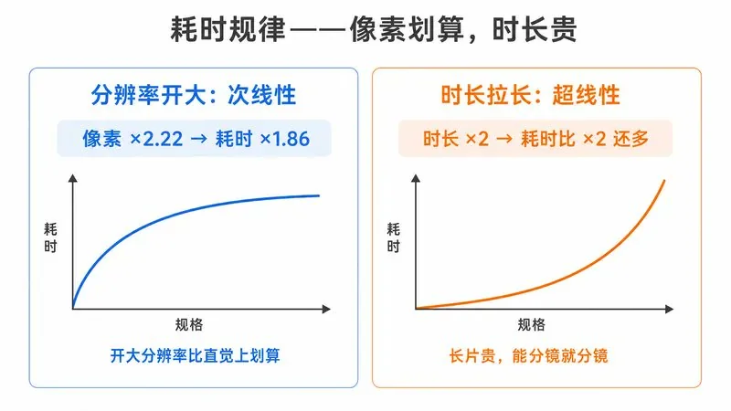
规格标度实测（4090 48G,SageAttention cuda++ 加速下）:
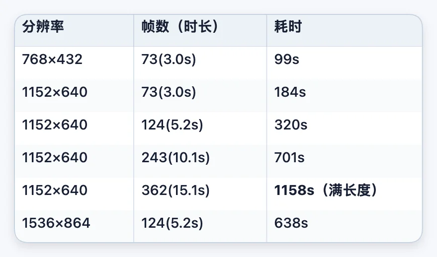
读表记三个数就够：5 秒的片等 5 分钟，10 秒等 12 分钟，15 秒满长度一条 19 分钟。另外注意 1536×864 相对 1152×640 是 1.8 倍像素、耗时接近同比翻倍——大画幅下次线性红利就没了，再次印证别超原生画布。数据可复现性验过：同规格隔天重跑，320.11s 对 322.05s，误差 0.6%。
7. 第 5 步：图生视频（I2V）
用途：让一张现成的图动起来，或用首尾两张图让模型补中间的运动。
模板库加载 MiniMax H3 Image to Video。权重和 T2V 完全同一套（fl2va），不用重新下载。
用 LoadImage 节点上传你的图，连到 MiniMaxH3ImageToVideo 节点的 first_frame 输入。
last_frame 是可选的：只给首帧 = 从这张图开始往后演；首尾都给 = 模型在两张图之间插出连贯运动（适合产品旋转、姿态变化这类“从 A 到 B”的镜头）；只给尾帧 = 模型倒推一个合理的开场，最后落在你的图上。
提示词按第 7 步的 I2VA 格式写（需要一行首帧对齐指令）。
输入图会被适配到生成分辨率，比例差太多会被处理——上传前先把图裁成和输出一致的宽高比，省得构图被意外切割。
8. 第 6 步：参考生视频（R2V）
用途：锁定一个角色的长相、一种画风、一段动作、一个运镜或一个声音，让它们出现在新视频里。这是 H3 最强也最复杂的模式。
准备
R2V 用另一套权重 ref2va，和 T2V/I2V 的 fl2va 不通用：
回 Comfy-Org/MiniMax-H3 下载 minimax_h3_ref2va_pruned_int8_convrot.safetensors(19.5 GB)，同样放 ComfyUI/models/diffusion_models/。
编码器和两个 VAE 复用，不用重下。
模板库加载 MiniMax H3 Reference to Video，确认 UNETLoader 里切到了 ref2va 权重。
使用规则
数量上限：最多 9 张参考图、3 条参考视频（每条可带自己的音轨）、3 条独立参考音频。
按连接顺序用标签引用：第一张图是 <Picture 1>，第二条视频是 <Video 2>，以此类推。提示词里必须用这些标签指名道姓。
给每个参考“派活”：明确说哪个参考管什么——长相、画风、动作、运镜还是音色。官方明确表示，显式指派的效果远好于把素材一堆了之。
ref_image_size 参数：match（默认）把参考图缩到生成分辨率，快；max 保留最高 2048px 短边，角色长相更保真，但参考 token 每一步采样都要完整过一遍，慢好几倍。日常用 match，只有脸锁不住时才换 max。
R2V 提示词的结构差异
R2V 的完整提示词是六段式（比 T2V 的三字段多了三段），顺序固定：subject_definitions（给每个参考内容定义标签和特征）→ summary（方括号任务类型开头的一段总结）→ retention_analysis（逐标签声明保留程度）→ detailed_description（主体，350–500 英文词，风格开场句放在 [Shot 1] 之前）→ overall_soundscape → non_diegetic_music。
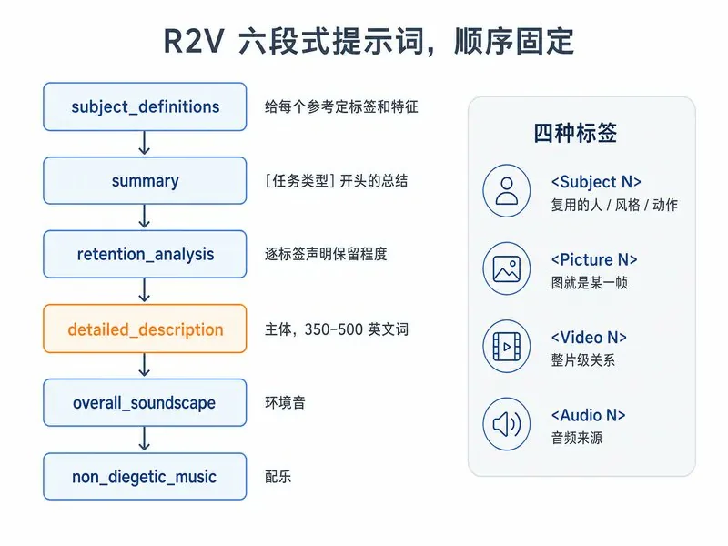
四种标签各管各的：
<Subject N> — 要在成片里复用的内容：人、场景、服装、风格、动作
<Picture N> — 一张图直接当某一帧或构图锚点
<Video N> — 整片级关系：被编辑的源片、续写起点、剪辑节奏来源
<Audio N> — 被复制或被参考的音频
最容易搞错的一条：图片只是用来定义角色或风格的话，不建 <Picture N>，把图的来源写进 <Subject N> 定义里。<Picture N> 留给“这张图就是第几帧”的场合。
另外两段的填法：summary 开头用方括号打任务类型，多个用 + 连——keyframe completion / reference generation / video editing / video continuation / audio reuse / audio reference。判断题：参考视频只提供运镜和节奏 = reference generation，真的在改那条片子才是 video editing。retention_analysis 给每个标签一个固定关系词：可见内容用 fully_preserved / partially_preserved / attribute_transfer / weak_reference，音频用 fully_copy / partially_copy / reference / weak_reference。
这套格式第一眼劝退，但它就是官方付费模块 Context-IR 的输出格式——你手写等于白嫖。新手不必一上来背全六段：先用模板自带的示例提示词替换素材跑通，再对照 官方 R2V 指南 里的完整案例逐段仿写，写一次存成模板，后面每次改几个词。记住一句就够：每个参考素材在 subject_definitions 里领一个标签和一份特征描述，后面所有段落都用这个标签称呼它，并说清它被保留了多少。
9. 第 7 步：提示词完整指南 ★
H3 的提示词是一套官方定义的结构化格式（官方指南原文)。随手一句话也能出片，但多镜头、角色对白、指定运镜、卡时间点，必须按格式来。除对白和画面文字保留原语言外，全部用英文写。
9.1 骨架：三个字段
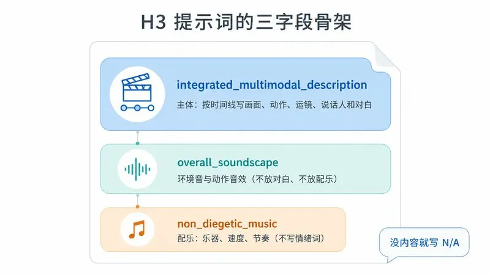
- integrated_multimodal_description — 主体。按时间线写画面、动作、镜头、说话人、对白、画内声音。
- overall_soundscape — 1–4 句，全片的环境音和动作音效（风雨、脚步、衣料摩擦、呼吸、笑声）。别写：对白、唱歌、画内音乐（它们属于上面）。
- non_diegetic_music — 1–3 句，配乐（角色听不到、只有观众听到）：乐器、速度、节奏、强弱变化。别写：情绪词（“悲伤的”“史诗感的”）、解释音乐的作用。
后两个字段没有内容就写 N/A(soundscape 只有用户明确要求全片静音时才 N/A)。
integrated_multimodal_description: [Shot 1] ...
overall_soundscape: ...
non_diegetic_music: ...9.2 镜头：[Shot N] 与切换时间
- [Shot 1] 开头交代整体风格 + 初始构图，不带时间戳。风格词：Cinematic、live-action、2D-animated、3D CG、claymation、watercolor、vintage film。
- 后续镜头带严格递增的切换时间：[Shot 2] At 00:03.500, the camera cuts to...
- 切换动词：the camera cuts to / the shot transitions to / the shot switches to；用户明确要求时才用 cross-dissolve、fade、wipe.
- 什么时候切镜头：切换应引入新信息（新主体、新空间、新视角、新时间）。只想拉近拉远或微调角度，用运镜，别切。
9.3 运镜：类型 + 幅度 + 速度
写成镜头内自然的英文句子，不要在句尾堆标签。
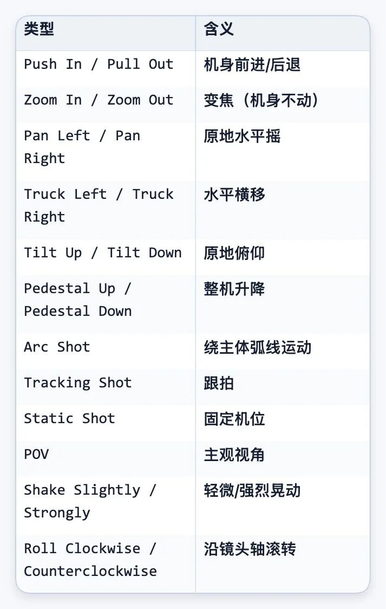
The camera pushes in with small amplitude at slow speed toward the folded letter in her hands.
The camera pans right with large amplitude at fast speed, revealing the open doorway.
The camera holds a static shot as the runner exits the frame.幅度：with small amplitude / with large amplitude；速度：at slow speed / at fast speed。中等幅度、正常速度直接省略不写。
9.4 对白：说话人 ID + <d> 标签
规则清单：
- 会出声的角色分配稳定 ID:(S1)、(S2)；多人齐声用 (S1,S2)；跨镜头 ID 不变；从不出声的角色不编号。
- 说话人首次出场，给足身份锚点：角色类型、年龄、性别、是否在画面内、音高、音色、语速、口音。
- 身份描述、ID、动作、语气放在 <d> 外面；<d> 里只放语言标记和台词本身，一字不改、不翻译、保留原标点。
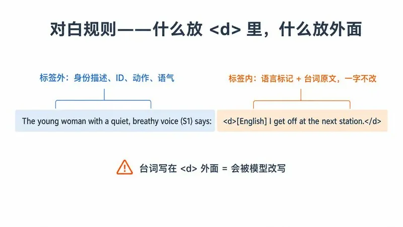
The young woman with a quiet, breathy voice (S1) says: <d>[English] I get off at the next station.</d>
The two children (S1,S2) shout together, <d>[English] Wait for us!</d>画外音必须用固定短语 says in an off-screen voiceover，且紧跟一句声明画面上的人嘴唇没动：
The man (S1) says in an off-screen voiceover: <d>[English] I still remember that road.</d> while his lips remain completely closed.台词跨越剪辑点：在两段的连接处都放 <scenetrans>，并明确写音频连续（如 carries over from the previous shot)；台词被片尾截断用 <cutoff>。
画面内文字（招牌、字幕、霓虹灯）：放英文双引号里，原文保留不翻译——A red neon sign reading "营业中" glows above the doorway.
9.5 一个完整可抄的例子（官方 T2VA 案例）
integrated_multimodal_description: [Shot 1] Live-action, cinematic, a medium-wide shot frames a baker opening the shutters of a small street bakery before sunrise. The camera pushes in with small amplitude at slow speed as the middle-aged baker with a calm, slightly raspy voice (S1) places a fresh loaf on the wooden counter and says: <d>[English] First batch of the morning.</d> [Shot 2] At 00:05.000, the camera cuts to a close-up of steam rising from the sliced bread while the baker's final words carry over from the previous shot.
overall_soundscape: Wooden shutters scrape open over a quiet street as trays clink softly inside the bakery. The doorbell rings once, followed by light footsteps and the crisp sound of bread being sliced.
non_diegetic_music: A soft acoustic-guitar pattern at a moderate tempo, joined by sparse upright-bass notes and a gentle fade at the end.替换成你的场景，就是一条合格的 H3 提示词。
9.6 带图的三种变体：开头多一行对齐指令
I2V 家族（I2VA / FL2VA / L2VA）在三字段之前多一行固定格式的对齐指令，然后空一行：
只给首帧（I2VA）——固定写法：
For the target video, at 0.00 seconds into the target video, <Picture 1> (from [Shot 1]) is fully referenced.描述结构：先锚定图里的风格、主体、构图，再写动作如何展开（首帧锚点 → 动作发端 → 持续发展 → 结果）。角色衣着、颜色、关键物件、空间关系要和图保持一致。
首尾帧都给（FL2VA）——声明两张图各对齐哪个时间点：
How the reference pictures align with the target video — Picture 1 (from Shot 1) aligns with the 0.00-second mark of the target video; Picture 2 (from Shot 1) aligns with the 8.00-second mark of the target video.正文别把两张图各描述一遍——写连接它们的运动路径（首帧状态 → 可见的中间变化 → 差距逐步收窄 → 尾帧状态）。FL2VA 尽量单镜头，让模型连续插值。
只给尾帧（L2VA）——图对齐片尾：
How the reference pictures align with the target video — <Picture 1> (from [Shot N]) aligns with the 6.00-second mark of the target video.描述结构：推断一个合理的先前状态 → 明确的动作与过渡路径 → 最后一镜逐步收敛 → 落在图上。
时间 S.SS 必须精确到两位小数，且和你的实际视频时长一致（对照第 6 步帧数表换算）。
9.7 提示词偷懒法
官方就是这么设计的：H3 的 API 版有个闭源的 Context-IR 模块专门干“把人话改写成上述格式”这件事，本地没有它，但你可以让任何一个 LLM 代劳。把官方指南链接和你的想法一起丢给它：
Learn how to write T2V prompts from https://huggingface.co/MiniMaxAI/MiniMax-H3/blob/main/docs/VIDEO_PROMPT_WRITING_GUIDE_base_en.md
then rewrite my idea into the three-field H3 prompt format:
[你的中文想法]生成结果检查三处：台词是否被改写（必须原文）、镜头时间戳是否递增且在总时长内、配乐字段有没有混进情绪词。
不想依赖 LLM 的手感，还有个更正统的偷懒路径：花几分钱调一次官方 Context-IR API（¥5.80/百万 token 输入），把你的大白话和素材丢进去，它返回的增强提示词就是标准格式——这本来就是 API 版里帮你重写提示词的那个闭源模块。拿返回结果存成模板，后面每次改几个词，比从零学快得多，本地 ComfyUI 也认这种格式。
10. 第 8 步：加速——SageAttention 省 24%，叠 Cache 最多再省 58%
先跑通再折腾这步。加速分两层，可以叠加：SageAttention 把每一步算得更快，Cache 类节点直接跳过没必要算的步。 先上第一层——同 seed 同工作流（1152×640/124 帧）A/B 实测省 24%：
装 SageAttention：从 SageAttention releases 下载和你的 PyTorch / CUDA 版本匹配的 wheel（文件名里写着 torch 和 cu 版本，对准了再下），然后 pip install <wheel文件名>。桌面版用户在其内置终端里执行，保证装进 ComfyUI 用的那个 Python 环境。版本认准 2.x——后面的 fp8 系模式只在 2.x 里有，1.x 根本没有对应内核；这些 wheel 都是 2.x 预编译版，直接装最省事。真要从源码自己编，有个硬门槛：sm_89（40 系）要求 CUDA ≥ 12.4（写在 setup.py 里），我们在 12.0 环境下编不过去，升到 12.8 才搞定。
装 KJNodes 节点包： ComfyUI Manager 里搜 ComfyUI-KJNodes 安装；或手动 git clone https://github.com/kijai/ComfyUI-KJNodes 到 ComfyUI/custom_nodes/，重启。
接线：工作流里加 Patch Sage Attention KJ 节点，插在 UNETLoader 和 BasicGuider 之间——UNETLoader 的 model 输出 → Patch 节点 model 输入，Patch 节点 model 输出 → BasicGuider 的 model 输入。只有 guider 需要打补丁，scheduler 不用动。
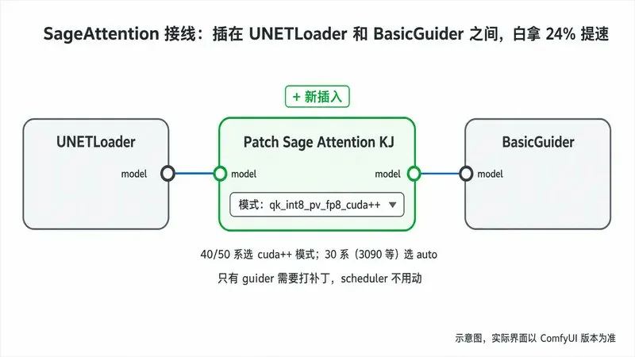
选模式：直接用 auto 就行。它会按显卡架构自动落到最快路径——4090 上 auto 就等于 qk_int8_pv_fp8_cuda++（查过源码：sm89 分支返回的正是同一个 fp8 内核，手动选没坏处但没必要）；30 系卡（3090/3060 等 Ampere）没有 FP8 硬件单元，auto 会落到 Ampere 可用的 int8 路径，仍有可观提速。真要手动锁定 qk_int8_pv_fp8_cuda++，前提是第 1 步装的确实是 SageAttention 2.x——1.x 没有这个内核，选了也是报错或静默回退。
正常 Run。懒人替代：不想接节点，启动 ComfyUI 时加 --use-sage-attention 参数全局开启（桌面版在设置的启动参数里加）。两个坑必须说清：这个参数和 KJ 节点二选一，千万别同时开——两边会重复打补丁，社区有反馈反而变慢；而且启动参数没法选模式，只能走默认路径。要控制力就接节点，要省事就用参数，别混着来。
第二层：Cache 类节点，跳步不硬算
SageAttention 是把每一步算得更快，Cache 类节点是另一个思路：扩散采样的相邻步输出经常几乎一样，变化小到一定程度就直接复用上一步的结果，整步跳过不算。两层叠加，同一条 362 帧满长度片（1152×640，4090 48G）的实测：
- 仅 SageAttention — 1183.6s（对无加速基线省 21.9%；和第 4 步表里的 1158s 是不同批次实测，2% 的批间波动属正常）
- Sage + EasyCache — 899.5s（在 Sage 基础上再省 24.0%）
- Sage + TeaCache — 500.5s（在 Sage 基础上再省 57.7%，比只开 Sage 快一倍还多）
EasyCache 是 ComfyUI 原生内置节点，不用装任何第三方包：画布上加一个 EasyCache 节点，串进 model 链路（和 Sage 补丁节点前后排开即可），关键参数是 reuse_threshold（另有 start_percent / end_percent / verbose 三个，一般不用动），默认 0.2 可以直接用。注意上面的 899.5s 是在更保守的 0.1 下测得——阈值越大跳得越多越快，124 帧短片实测 0.2 跑 215.7s、0.1 跑 260.0s，用默认值会比文中数字更快、损失也略大 。TeaCache 认准 H3 专用的节点包——本文 500.5s 用的是 Icyoung/ComfyUI-MiniMaxH3-TeaCache（节点名 MiniMaxH3TeaCache），另一个可选是 lihaoyun6/ComfyUI-MiniMaxH3-Cache（节点名 MiniMaxH3Cache）。别装 Manager 里那个通用的 ComfyUI-TeaCache（welltop-cn）——它的支持列表停在 FLUX / HiDream 那一代，没有 H3，装完你会发现根本没有能接进 H3 链路的节点。关键参数是 rel_l1_thresh，越大跳得越狠越快。
天下没有免费的午餐——Cache 的加速来自跳过真实计算，但代价要看对地方。我们在 R2V 参考图模式下逐帧核对过：人脸身份并不漂移（同一张脸、同一发型、同一裙装结构从头稳到尾），真正掉的是画面的“活性”——近似静止的“发呆”帧占比从 13.8% 翻到 41.5%，细节也更容易糊。所以检查 Cache 成片时别盯着脸看，看画面发不发呆、细节糊不糊。
另一条要想在前面：Cache 改变的是生成结果本身，不是“同一条片跑快点”。 同 seed 实测，TeaCache 输出对无 Cache 基线的 SSIM 只有 0.78（EasyCache 是 0.96）——所以“草稿开 TeaCache 挑片、正片换配置复现”这个直觉打法不成立：换了配置，你挑中的那条画面就变了。正确用法二选一：跑量筛提示词、筛创意，全程开 Sage + TeaCache，别指望草稿画面能原样复现；对画面有要求的正片，从选片到定稿用同一套保守配置（Sage + EasyCache 或干脆只开 Sage）。阈值往小调，跳得保守些，损失也小些。
11. 常见问题排查
- Q：提示缺少
MiniMaxH3ImageToVideo/EmptyMiniMaxH3LatentAV等节点
A：ComfyUI 版本 < 0.30.0，升级。最高频问题。桌面版/整合包跟随稳定版发布，更新后重启再试。 - Q：爆显存（OOM / CUDA out of memory）
A：按顺序排查——① 确认用的是 pruned_int8_convrot DiT + nvfp4_awq 编码器这对最小官方组合，不是误下了 bf16;② 关掉其他吃显存的程序（游戏、另一个 ComfyUI、跑着模型的浏览器标签）;③ 系统内存拉到 32GB 以上，12GB 卡靠内存分层加载；④ 还不行，换社区 INT4 量化（第 2 步末尾）。记住实测规律：降分辨率救不了 OOM，显存大头是模型本身。 - Q：输出视频没有声音
A：两个 VAE 必须都加载——video_vae_fp16 和 audio_vae_fp32，并确认工作流里有VAEDecodeAudio节点连到SaveVideo。用官方模板一般不会缺，自己改工作流时最容易删错。 - Q：生成完全失败，分辨率开得很小
A：H3 最低 384p,256p 及以下必然失败。用官方模板的分辨率预设。 - Q：视频时长和我填的不一样 / 卡不上音乐节拍
A：帧数被吸附到 17k+5 网格（第 6 步），单次上限 15.08 秒。从合法帧数表里直接挑，别填任意值。 - Q：R2V 模板报“找不到模型”
A：R2V 用 ref2va 权重，和 T2V/I2V 的 fl2va 是两套，单独下载（第 6 步）。 - Q：R2V 特别慢
A：检查ref_image_size是否选了 max——参考 token 每步采样都要过一遍，max 慢好几倍。日常用 match。 - Q：参考视频/输入图出来变形、裁切
A：参考视频会被压到「短边 768、面积上限 768×1344、对齐 32」的画布，和输出分辨率是两套规则。素材先自己裁成目标宽高比。 - Q：控制台刷 dtype 警告
A：正常现象（第 5 步），部分层回退标准 attention，不影响生成。 - Q：我的 3090 比别人的 4090 慢好几倍，显存还用不满
A：两个原因叠加——① 3090 是 Ampere 架构，没有 FP8 硬件单元，INT8/FP8 权重要在计算前转回高精度，同代对比天然慢；② 社区多人观察到 H3 的动态显存调度偏保守，24GB 卡可能只用到 18GB 左右，显存利用率不满是已知现象，不是你的配置错了。能做的：开 SageAttention（auto 模式）、用质量取向的 INT8 Lean 权重、把内存加到 64GB 减少分层等待 - Q：16GB 卡（5070 Ti / 4080）启动就崩，报 “Device memory is nearly full”
A：这是加载阶段显存 + 内存双双吃紧的表现。按顺序试：① 系统内存 32GB 是底线，加到 64GB 最有效；② 加启动参数--cache-none--disable-smart-memory强制模型完全卸载；③ 关掉浏览器硬件加速（浏览器本身会占 1–2GB 显存）；④ 换第 2 步末尾的 INT4/NVFP4 小权重。另有 5070 Ti 用户报告速度异常波动的案例，若明显慢于同档卡，先更新到最新稳定版 ComfyUI 和显卡驱动再对比 - Q：生成的人物说中文口型对不上 / 台词被改
A：检查 <d> 标签——语言标记写对（[Chinese])，台词原文放标签内，身份和语气描述放标签外。台词被模型改写通常是因为写在了 <d> 外面。
12. 声音效果，提前对齐预期
官方宣传“原生 32kHz 立体声”，实测拆解：32kHz、双声道属实，左右声道确实不同（L/R 差 0.2–0.9 dB，差信号比主信号低 14–24 dB），不是单声道复制两份糊弄人。但预期放对：这是“有空间感”的窄声场立体声，不是强声像分离，别指望左右横穿的音效定位。它最值钱的一点：对白、音效、配乐和画面在一次前向传播里同时生成——唇形同步是天生的，不是后期对上去的。
13. 本地 vs API，一笔账
官方 API 刊例价（人民币）:2K ¥0.80/秒，768P ¥0.50/秒，768P→2K 再生成 ¥0.30/秒；音频输入免费，图片 5 张内免费（超出 ¥0.20/张）。
注意 0.50 + 0.30 = 0.80——先出 768p 草稿再升 2K，和直接出 2K 一个价，官方定价没给“云端草稿”留任何便宜。这正好框定了本地部署的位置：
迭代试错、跑量出草稿 → 本地。 一条 5 秒 768p 走 API 要 ¥2.5，本地电费忽略不计，试 50 版提示词就省 100 多块。
定稿要高清，两条路。 路线 A：本地超分到 1080p，免费。社区已有调好参数的 ComfyUI 工作流，用 LTX 2.3 或 Wan 2.2 5B 把 768p 成片拉上 1080p——注意选调低了 sigmas 的版本，参数过高会换脸、毁口型；早期流传的一些版本就栽在这上面。路线 B：API 升 2K，¥0.30/秒，15 秒成片 ¥4.5。它和普通超分不是一回事——重生成带着原始上下文重画一遍，小字和细节是还原不是猜，交付级项目值这个钱。ComfyUI 里就有现成的 API 模板（第 3 步表格里那三个 api_ 开头的），不用离开工作台。
没有 12GB+ 的 N 卡、或一年用不了几次 → 直接 API，别为几条视频折腾 40 GB 权重。
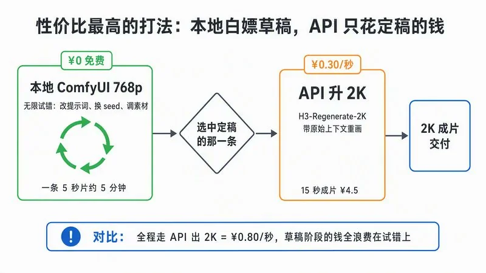
本地省下的主要是试错阶段那笔最大的浪费；定稿阶段，1080p 够用就连高清的钱也省了，只有非要官方 2K 才掏 ¥0.30/秒。想清楚这个定位，一张消费级的卡不只是草稿机，是台能出片的主力机。
最后按四类人把路线判断说死：
- 只是想玩玩 → 第 0 步的网页版就够了，别往下走。
- 做产品接生成能力、要 2K、赶交付 → 直接 API，一条 5 秒 2K 四块钱，别折腾本地。
- 有 12GB+ 的 N 卡、出片量大、爱折腾 → 本地部署 + 上面的混合打法，这篇教程就是为你写的。
- 想微调、做研究 → 下完整 bf16 权重（AdaLN 那 13B 也在里面），官方推荐 SGLang 多卡起步，超出本文范围。
附：决定走 API 的话，这段脚本直接抄
去 platform.minimaxi.com（海外 platform.minimax.io）注册，用户中心充值，账户管理里创建 API key。然后三步：提交任务 → 轮询状态 → 下载视频：
import os, time, requests
API_KEY = os.environ["MINIMAX_API_KEY"] # 你的 key
BASE = "https://api.minimaxi.com" # 海外用 https://api.minimax.io
headers = {"Authorization": f"Bearer {API_KEY}"}
# 1. 提交任务
payload = {
"model": "MiniMax-H3",
"content": [
{"type": "text", "text": "镜头拍摄一只橘猫趴在窗台上，"
"窗外下着雨，猫的尾巴慢慢摆动，画面是暖色调，"
"配上雨声和远处隐约的车流声。"}
],
"duration": 5, # 4-15 的整数
"resolution": "768P", # 草稿用 768P，定稿再 2K
"ratio": "16:9", # 纯文生视频必填，不能写 adaptive
}
r = requests.post(f"{BASE}/v2/video_generation", headers=headers, json=payload)
r.raise_for_status()
task_id = r.json()["task_id"]
# 2. 轮询直到完成
while True:
time.sleep(10)
q = requests.get(f"{BASE}/v2/query/video_generation/{task_id}", headers=headers).json()
status = q["task"]["status"]
if status == "succeeded":
url = q["task"]["content"]["url"]
break
if status in ("failed", "canceled"):
raise SystemExit(q)
# 3. 下载（链接有时效，别囤着不下）
open("out.mp4", "wb").write(requests.get(url).content)图生视频只需在 content 里加一项 {"type": "image_url", "image_url": {"url": "https://你的图片地址.png"}, "role": "first_frame"}，加了首帧图之后把 ratio 删掉（会自动按图片比例来）。
四条新手墙，提前告诉你：
- duration 只收 4 到 15 的整数（注意和本地的 17k+5 帧数网格是两套规则）。
- 素材单个限制：视频 50MB、图 30MB、音频 15MB；请求体总共 64MB，超了就传 URL 别传 base64。
- 音频不能单独作为输入，必须搭一张图或一段视频。
- 任务记录只保存 7 天，视频链接有时效，出片就下载。
实测环境：RTX 4090 48GB（魔改）/ ComfyUI 0.30.0 / torch 2.11 + cu128。文中耗时、显存、可复现性数据均为该环境实测；权重大小以 Hugging Face 官方仓库为准；提示词语法以 MiniMax 官方指南为准。
原文引用链接
原文中以「引用」角标形式标注的出处（X 接口未返回角标与链接的对应关系，此处按原文出现顺序汇总）：
- https://hf-mirror.com
- https://github.com/kijai/ComfyUI-KJNodes
- https://huggingface.co/Comfy-Org/MiniMax-H3
- https://www.reddit.com/r/StableDiffusion/comments/1ve0urz/minimaxh3_weights_up/
- https://www.comfy.org/
- https://www.reddit.com/r/StableDiffusion/comments/1ve6lvr/minimax_h3_first_local_test_5_seconds_at_960540/
- https://www.reddit.com/r/StableDiffusion/comments/1ve59y1/is_the_vram_being_underutilized_on_minimax_h3/
- https://github.com/lihaoyun6/ComfyUI-MiniMaxH3-Cache
- https://github.com/woct0rdho/SageAttention/releases
- https://huggingface.co/MiniMaxAI/MiniMax-H3/blob/main/docs/VIDEO_PROMPT_WRITING_GUIDE_base_en.md
- https://ai-muninn.com/en/blog/minimax-h3-nvfp4-rtx5090
- https://www.reddit.com/r/StableDiffusion/comments/1ves4o0/minimax_h3_is_shockingly_uncensored_wow/
- https://github.com/Icyoung/ComfyUI-MiniMaxH3-TeaCache
- https://github.com/Comfy-Org/ComfyUI/issues/15261
- https://huggingface.co/MiniMaxAI/MiniMax-H3/blob/main/docs/VIDEO_PROMPT_WRITING_GUIDE_ref_en.md
- https://github.com/Comfy-Org/ComfyUI/pull/15224
- https://www.reddit.com/r/StableDiffusion/comments/1vf4ync/12x_faster_minimax_h3_generations_stop_rendering/
- https://github.com/Comfy-Org/ComfyUI/pull/9496
- https://www.reddit.com/r/StableDiffusion/comments/1ve63vj/minimax_h3_t2v_10s_at_19201088_took_58_minutes_on/
- https://www.reddit.com/r/StableDiffusion/comments/1vd9o0r/minimax_h3_1080p_25_seconds_text_to_video_in/
- https://docs.comfy.org/built-in-nodes/EasyCache